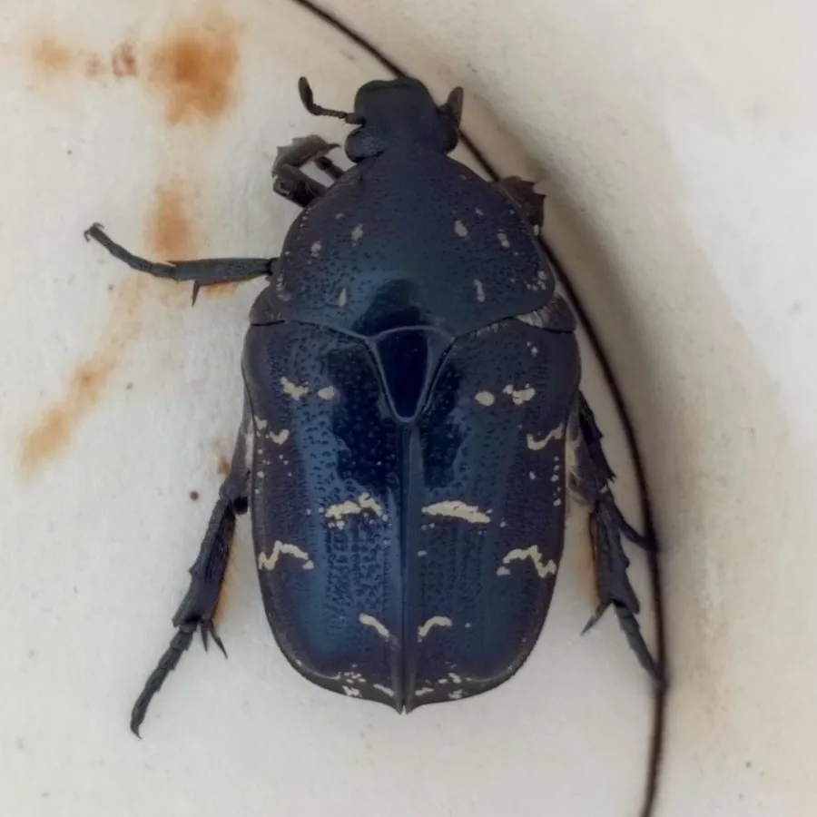

昆虫 · 动物界
白星花金龟 Protaetia brevitarsis

鞘翅带白色星斑的常见花金龟，成虫取食花蜜和熟果，幼虫可处理农业有机废弃物，是常见的资源昆虫。
- 分类
- 门节肢动物门纲昆虫纲目鞘翅目科金龟科属花金龟属
- 栖息环境
- 果园、花园与堆肥场，成虫在花和熟果上活动
- 地理分布
- 中国、日本、朝鲜半岛等东亚地区
- 保护级别
- 暂无评估
物种志
白星花金龟成虫体长约 1.2–1.6 cm，体黑褐色至黑紫色，鞘翅上有不规则的白色绒斑，如同撒了白星，因此得名；体表有金属光泽，前足胫节外缘有齿，前胸背板中央有一条纵向浅纹。
成虫白天活动，喜欢取食花蜜、花粉和熟透的果实，也常在腐果和树液处聚集，飞行时发出嗡嗡声。幼虫（蛴螬）在腐殖土和堆肥中生活，取食腐熟有机物。白星花金龟分布在中国、日本、朝鲜半岛等地，一年发生一代，以幼虫越冬。近年来它被开发为资源昆虫：幼虫可高效处理农业有机废弃物，并转化为虫体蛋白和虫粪有机肥，在循环农业中很有潜力；成虫偶尔危害果园熟果，但一般无须专门防治。
形态与习性
- 食性成虫取食花蜜、花粉和熟果；幼虫取食腐殖质
- 体长成虫约 1.2–1.6 cm
- 生活史一年发生一代，以幼虫越冬
- 资源利用幼虫可处理农业有机废弃物，生产虫体蛋白
- 危害成虫偶尔啃食果园成熟果实
- 分布中国、日本、朝鲜半岛等地
趣味知识
- 白星花金龟鞘翅上的白色绒斑，是它最明显的识别特征。
- 它的幼虫能高效处理农业有机废弃物，被当作资源昆虫研究。
- 成虫喜欢熟透的果实，果园里偶尔能看到它们聚集在烂果上。